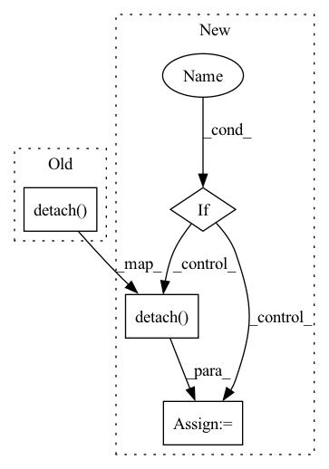

Pattern ID :1676
Before Change
quantize, embed_ind = self._codebook(x)
if self.training:
commit_loss = F.mse_loss(quantize.detach() , x) * self.commitment
quantize = x + (quantize - x).detach()
else:
commit_loss = torch.tensor([0.], device = x.device)After Change
loss = torch.tensor([0.], device = device)
if self.training:
if self.commitment > 0:
commit_loss = F.mse_loss(quantize.detach() , x)
loss = loss + commit_loss * self.commitment
if self.orthogonal_reg_weight > 0:
orthogonal_reg_loss = orthgonal_loss_fn(self.codebook)
loss = loss + orthogonal_reg_loss * self.orthogonal_reg_weight
quantize = self.project_out(quantize)
In pattern: SUPERPATTERN
Frequency: 5
Non-data size: 4
Instances Fragment ID: 5773448
Project Name: lucidrains/vector-quantize-pytorch
Commit Name: be2e021bf30d70ec8d709c1ea3ce5ef796a00058
Time: 2021-12-02
Author: lucidrains@gmail.com
File Name: vector_quantize_pytorch/vector_quantize_pytorch.py
M Class Name: VectorQuantize
N Class Name: VectorQuantize
M Method Name: forward(2)
N Method Name: forward(2)
M Parent Class: nn.Module
N Parent Class: nn.Module
M File Name: vector_quantize_pytorch/vector_quantize_pytorch.py
N File Name: vector_quantize_pytorch/vector_quantize_pytorch.py
M Start Line: 293
M End Line: 308
N Start Line: 300
N End Line: 330
Before Change
"{}/loglaplace_loss".format(split): loglaplace_loss.detach(),
"{}/loggaussian_loss".format(split): loggaussian_loss.detach(),
"{}/perceptual_loss".format(split): perceptual_loss.detach(),
"{}/d_weight".format(split): d_weight.detach() ,
"{}/g_loss".format(split): g_loss.detach(),
}
After Change
"{}/g_loss".format(split): g_loss.detach(),
}
if self.use_adaptive_adv:
log["{}/d_weight".format(split)] = d_weight.detach()
return loss, log
if optimizer_idx == 1: Fragment ID: 5773436
Project Name: thuanz123/enhancing-transformers
Commit Name: 5cbdb206b5435af12d3c109a9a8a4096ee64bc6e
Time: 2022-06-04
Author: 87744278+thuangb@users.noreply.github.com
File Name: enhancing/losses/vqperceptual.py
M Class Name: VQLPIPSWithDiscriminator
N Class Name: VQLPIPSWithDiscriminator
M Method Name: forward(8)
N Method Name: forward(8)
M Parent Class: nn.Module
N Parent Class: nn.Module
M File Name: enhancing/losses/vqperceptual.py
N File Name: enhancing/losses/vqperceptual.py
M Start Line: 119
M End Line: 136
N Start Line: 119
N End Line: 142
Before Change
loss = 0
for i in range(3):
if self.is_ssim:
loss += pytorch_ssim.ssim(x_vgg[i], y_vgg[i].detach() )
else:
if self.relative:
loss += self.criterion(x_vgg[i],y_vgg[i].detach(),resize_to_match(mask,x_vgg[i]))After Change
loss += self.criterion(resize_to_match(mask,x_vgg[i])*x_vgg[i],resize_to_match(mask,y_vgg[i])*y_vgg[i].detach()) //
// loss += self.criterion(x_vgg[i], y_vgg[i].detach())
// VGG Style Loss
if self.use_style:
x_gram = self.gram_matrix(x_vgg[i])
y_gram = self.gram_matrix(y_vgg[i].detach() )
style_loss += F.l1_loss(x_gram, y_gram)
return {"content":loss, "style":style_loss}
Fragment ID: 5773438
Project Name: bcmi/slbr-visible-watermark-removal
Commit Name: 43e84b70895d28955496122816e50857863e5bfd
Time: 2022-01-04
Author: lj200820082007@163.com
File Name: src/utils/losses.py
M Class Name: VGGLossX
N Class Name: VGGLossX
M Method Name: forward(4)
N Method Name: forward(4)
M Parent Class: nn.Module
N Parent Class: nn.Module
M File Name: src/utils/losses.py
N File Name: src/utils/losses.py
M Start Line: 226
M End Line: 239
N Start Line: 220
N End Line: 238
Before Change
self.act = GELU()
def forward(self, lmem, smem, hiddens):
hiddens, lmem = hiddens.detach(), lmem.detach()
batch, dim_head, mem_depth = lmem.shape[1], self.dim_head, self.num_memory_depth
if lmem.shape[2] == 0:
lmem = self.init_lmem.expand(mem_depth, batch, -1, -1).clone()After Change
def forward(self, lmem, smem, hiddens, detach_lmem = False):
hiddens = hiddens.detach()
if detach_lmem:
lmem = lmem.detach()
batch, dim_head, mem_depth = lmem.shape[1], self.dim_head, self.num_memory_depth
if lmem.shape[2] == 0:
lmem = self.init_lmem.expand(mem_depth, batch, -1, -1).clone() Fragment ID: 5773454
Project Name: lucidrains/memory-transformer-xl
Commit Name: d4ae80a8ce18a5ab0d871139f195bb78a7529547
Time: 2020-07-22
Author: lucidrains@gmail.com
File Name: memory_transformer_xl/memory_transformer_xl.py
M Class Name: MemoryAttentionNetwork
N Class Name: MemoryAttentionNetwork
M Method Name: forward(5)
N Method Name: forward(4)
M Parent Class: nn.Module
N Parent Class: nn.Module
M File Name: memory_transformer_xl/memory_transformer_xl.py
N File Name: memory_transformer_xl/memory_transformer_xl.py
M Start Line: 240
M End Line: 240
N Start Line: 239
N End Line: 243